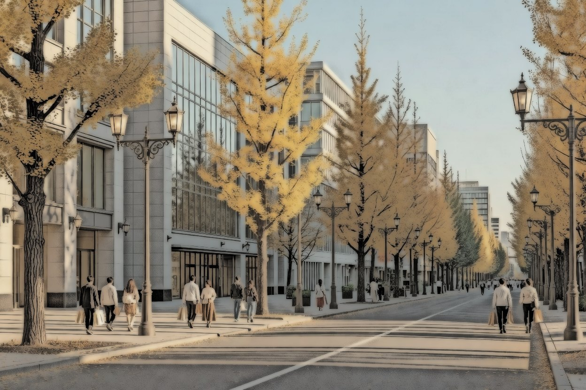

第 1 天10.24 週六
湖畔的午後，海邊的黃昏
九點五十五分落地，進市區安頓好，第一個下午我們帶兩位往西走，避開最後兩天要逛的中洲與天神。
上午｜抵達
機場入境後搭地鐵五分鐘進博多，飯店寄放行李。
下午｜大濠公園
湖繞一圈剛好兩公里，走完不累。園內的日本庭園要另外購票，秋天的楓與松值得那幾百圓。北側緊鄰福岡城跡與舞鶴公園，天守台上看得到整片城區；城跡旁的鴻臚館跡展示館是遣唐使時代的迎賓館遺構，免費，二十分鐘走得完。想坐下來的話，湖畔那間玻璃屋的咖啡店幾乎每張桌子都看得到水。
傍晚｜百道海濱
搭地鐵到西新，走十五分鐘就是海。福岡塔是日本最高的海濱塔，展望室在一百二十三公尺處；不上塔的話，沙灘旁的 Marizon 那組白色建築也很好拍。夕陽落進玄界灘的時間大約五點半。晚餐就在百道或西新一帶解決，離飯店二十分鐘。
住 Via Inn 博多口站前
住 Quintessa 天神南
同晚
重複
第 2 天10.25 週日
參道的煙火氣，與一頓為兩位準備的晚餐
今天是紀念日，白天輕鬆走，晚上留給那頓正式的餐。
上午｜太宰府天滿宮
從天神搭西鐵約二十五分鐘。參道兩側十幾家梅枝餅，現烤的皮脆內軟，站著吃最好。本殿後方的樹林裡有天開稻荷社，紅鳥居一路往上，人比正殿少得多。參道口那間隈研吾設計的咖啡店，用兩千根木條交錯撐起整個店面，值得繞進去看一眼——順帶一提，兩位第三晚要住的長崎飯店，是同一位建築師的作品。
下午｜九州國立博物館
就在天滿宮旁邊，一條長長的手扶梯隧道連過去。這是日本第四座國立博物館，建築本身是一片波浪狀的玻璃帷幕，常設展從舊石器時代講到江戶，兩小時足夠。看不動的話，博物館外圈的林子也很好走。
傍晚｜淨水通與藥院
回市區後別急著進餐廳。淨水通一帶是安靜的住宅坡道，銀杏行道樹十月底開始轉色，散落幾間烘豆自家焙煎的小店。從這裡走到渡邊通的餐廳只要十分鐘。
17:30博多 かげん（渡邊通）・三小時席次，二十點半結束
住 Via Inn 博多口站前
住 Quintessa 天神南
同晚
重複
第 3 天10.26 週一
午後啟程，住進世界新三大夜景裡
今天不用早起。中午過後才移動，下午在長崎市區補一個景點，天黑前上山。
上午｜自由
睡飽再退房。博多站樓上的阪急與地下食品街可以先探路，最後一天要在這裡收伴手禮。
下午｜出島
兩點半抵達長崎，從車站搭路面電車三站就到。這是江戶鎖國時期唯一對外的窗口，扇形的人工島現在復原了十幾棟建築，商館長宅邸裡的西式家具與和室並置，看得出當年兩種生活如何擠在同一座島上。整區走完約一個半小時。出來後往海邊走幾分鐘是水邊之森公園，草坡直接接到港灣，是長崎少數平坦而開闊的地方。
傍晚｜上山
長崎站西口有飯店的免費接駁車。四點入住，放完行李天正好開始暗——今晚不必上展望台，房間的窗就是觀景台，浴室也看得到。
12:54博多發，接力かもめ 29 號
14:28長崎到
16:00入住，長崎站西口有免費接駁車
住 Garden Terrace 長崎
第 4 天10.27 週二
上午駛向無人島，午後走進異國坡道
長崎唯一的整天，上午出海，下午留在南山手的坡道上。
上午｜軍艦島
接駁車下山到長崎港，早班船出航。航程單趟約四十分鐘，途中會經過高島；靠上端島之後有專屬導覽帶隊，能走的範圍是島的南端一小塊，看得到當年的小學校舍、幹部宿舍與三十號棟——日本最早的鋼筋混凝土集合住宅。連導覽來回約三小時。島上沒有廁所也沒有販賣，上船前先解決。
下午｜哥拉巴園
回港後先到新地中華街吃午餐，什錦麵與皿烏龍麵都是這裡發明的。往南走上坡就是哥拉巴園，蘇格蘭商人哥拉巴的宅邸是日本現存最古老的木造西式建築，園區依山而建，有幾段手扶梯代步，居高處看得到整個長崎港。出園順路經過大浦天主堂，日本現存最古老的教堂，木造哥德式；再往回一點是荷蘭坡，石板路兩側都是明治時期的洋館。
傍晚｜回山上
還有力氣的話，眼鏡橋在回程路上，中島川上的雙拱倒映成一副眼鏡，五分鐘就看完。之後上山吃晚餐。
08:30接駁車下山，前往長崎港碼頭
09:00軍艦島上陸巡航出航（早班，時刻依業者）
18:00大阪屋 浜町店・已預約，二十點半結束
住 Garden Terrace 長崎
第 5 天10.28 週三
離開山海，走進一座荷蘭小鎮
中午移動，下午進園。今天是週三，宮殿前庭的恐怖企劃休演，剛好當作暖身日。
上午｜長崎最後半天
十二點退房，行李可以先寄放。中華街或長崎站樓上吃午餐，順手把長崎蛋糕買齊——這是離開前最後的機會。
下午｜豪斯登堡入園
兩點半抵達，車站到入口走五分鐘。先進小木屋放行李，這一區在園子最安靜的角落，森林與湖圍著，露台上可以坐很久。入園後第一段路是花之路，四季換不同的花，是拍風車的經典位置。沿運河往裡走就是阿姆斯特丹城，商店與餐廳最密的一區，晚餐在這裡解決。
晚上｜不看秀的選項
上多姆托倫塔看整座小鎮的燈，或轉進全室內的光之幻想城；想輕鬆點就沿著運河散步回小木屋，那段湖區幾乎沒人。萬聖節期間同步舉辦的葡萄酒祭也在今晚就開始。
12:00退房
13:03長崎發，快速海濱線直達
14:31豪斯登堡到
住 森林小木屋
第 6 天10.29 週四
秋玫瑰的早晨，被嚇一跳的夜晚
園內最完整的一天。用飯店的提早入園特典搶在開園前進去，人最少的那一小時是兩位的。
上午｜藝術花園
初夏百萬朵玫瑰祭的主場，秋天輪到秋玫瑰。秋玫瑰的顏色比初夏深、香氣更濃，十月下旬開始開花。把相機放低一點，可以把花、摩天輪與多姆托倫塔一起入鏡。同一區還有音樂噴泉秀「水之魔法」，場次表當天在入口拿。
下午｜設施城
遊樂設施最集中的一區。EVA 八K 騎乘劇院在這裡，是全園唯一留下來的 EVA 內容，常設不會撲空；雙層的天空旋轉木馬也在同一帶。走累的話，運河遊船可以當交通工具用，各區都有碼頭，坐一段是這座園子最舒服的偷懶方式。
晚上｜恐怖企劃
天黑之後氣氛整個翻面。宮殿前庭今天有演出，新反派「死亡之王」登場的正統恐怖企劃。出來順路逛葡萄酒祭，約五十款世界與九州的酒，帶著一點微醺穿過湖區走回小木屋。
住 森林小木屋
第 7 天10.30 週五
搬進小鎮中央，把光留到最後
今天換到園區正中央的飯店，也是三晚裡唯一不必趕路看夜間秀的一晚。
上午｜光之幻想城
先把行李搬到阿姆斯特丹飯店。這一區是體驗型數位設施的集合，全在室內，走進去就會被光包住，互動式的裝置適合慢慢玩。因為不受天氣影響，安排在上午最保險。
下午｜海港城
面大村灣的一區，綠地多、風大、人少。這是園內少數不靠燈光取勝的風景，夕陽落進海灣的樣子和昨天的森林完全不同。宮殿的後方庭園也在這半天的路線上，白天進去看得到規整的荷蘭式花壇。
晚上｜夜間秀
光雕、噴泉配上小提琴、大提琴與鋼琴的現場演奏。住在正中央的好處是散場不必擠——沿著運河走幾分鐘就到房門口。
住 阿姆斯特丹飯店・米菲兔房
第 8 天10.31 週六
白天告別森林，夜裡遇上五百人的神輿
上午退房，午後回福岡，晚上是這趟的最後一個高潮。
上午｜園內最後採買
米菲兔周邊與園內限定商品集中在阿姆斯特丹城。直營飯店有伴手禮宅配服務，買多了可以直接寄回機場或家裡，不必扛著上車。
下午｜移動
特急約一小時五十分回博多，轉往大名的飯店。先放行李——祭典人潮很密，拖著行李會很痛苦。
晚上｜中洲祭
十八點過後中洲大通封街，兩側排開約六十攤。十九點在中洲國廣稻荷神社，五百人分擔兩座女神輿出發；二十點花魁道中的人力車沿大通緩緩巡遊。飯店走到中洲約十五分鐘，散場不必擠地鐵。
16:30入住西鐵 Grand，放行李
18:00中洲大通飲食攤車開始
19:00女神輿出發
20:00花魁道中
住 西鐵 Grand（大名，走路到祭典）
住 博多新大谷（10/31–11/02，不用搬）
擇一
這一晚訂了兩間，要退掉一間。兩間各有道理：西鐵 Grand 就在大名，看完女神輿走回去十分鐘；新大谷在博多，好處是隔天不用再搬一次行李。留西鐵 Grand 的話，新大谷要改成 11/01 才入住。
第 9 天11.01 週日
最後一整天，拿來買
回程是隔天中午，這一天完全可用。飯店在博多，搭地鐵到天神五分鐘。
上午｜天神
福岡百貨最密的地方。岩田屋本店是在地老牌、質感最好，大丸福岡天神店、福岡 PARCO、Solaria Plaza 都在同一個路口周邊，走路五分鐘內走得完。下雨就走天神地下街——南北長約五百九十公尺、十二個街區，歐風石板路配古典燈飾，本身就值得走一趟。
下午｜大名・今泉
從天神走過去五到十分鐘，是福岡小店密度最高的一區：選物店、古著、獨立咖啡，跟百貨完全不同的節奏。昨晚住西鐵 Grand 的話，這裡就在飯店門口。
傍晚｜博多站
回程順路收尾。JR 博多城（阪急、AMU PLAZA、Hands）、KITTE 博多，還有地下的博多 DEITOS——明太子、通りもん這類伴手禮一次買齊，離飯店最近，提回去也不累。想換口味可以把下午改成運河城博多，在天神與博多之間。

銀杏轉黃的天神街頭（示意圖・AI 生成，非實景照片）
今天買的東西，稅是先付後退。日本的免稅制度十一月一日凌晨零點整個換掉，沒有過渡期。今天結帳要付含稅全額，明天在機場確認過才退你——詳見下面「退稅」那一章。想省麻煩的話，大筆採購其實該放在昨天（10/31，舊制當場折抵、機場什麼都不用做）。
住 博多新大谷飯店
第 10 天11.02 週一
好好吃一頓早餐，然後去辦退稅
不排景點。十二點十五分的飛機，扣掉退稅手續，能用的時間只有早餐那一段。
07:30飯店早餐，慢慢吃
09:30退房。免稅品放在拿得出來的地方，可能要開箱給海關看
09:40博多站搭地鐵空港線，兩站約五分鐘到福岡空港站
09:55轉免費接駁巴士到國際線航廈，約十到十五分鐘
10:15抵達國際線航廈，先辦退稅再報到
11:15報到截止（長榮規定起飛前一小時）
12:15BR105 起飛
地鐵只到國內線航廈，國際線要再轉一趟免費接駁巴士——這段最容易被漏算，出發前再確認一次是否仍是這個動線。
桃園 13:50 抵達